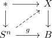
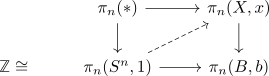

serre fibration and surjective on homotopy group and strict lift of spheres
Proposition
Let $f: X \rightarrow Y$ be a serre fibration and

be a lifting problem
TFAE:
- there exists a lift
- there exists a lift on $\pi_n$

Proof
1) $\implies$ 2)
follows from functorality
2) $\implies$ 1)
choose a lift to $\pi_n(X)$, i.e. an element in $\pi_n(X)$. This is given by a map $h: S^n \rightarrow X$ and a homotopy from $h \circ f \simeq g$
This shows, that the diagram
commutes up to compatible homotopy and can then by strictified (cf. lift of serre fibration and hurewicz cofibration and strictifying)